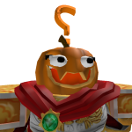

I don't enjoy talking to others very much. As my hobbies, I spend a lot of my leisure time studying and playing video games. I don't normally say this but I spend a lot of time developing games on a game platform called "Roblox". I'm aspiring to be a physicist in the future, working in the field of astrophysics. My favorite food is salmon, specifically sockeye salmon. I'm not a very physically active person, I spend most of my time at home on my PC. I talk to most of my friends online. I enjoy when my ideas are heard although I still don't enjoy talking.

I took the course CST10 because I wanted to further my programming knowledge. I stated before that I develop games on Roblox, but I had no idea how to create a website. Another reason why I took this class is because I feel the most comfortable when I'm on a computer. While I'm at school, I prefer to feel relaxed for most of the time. I have already learnt quite a bit from this class and it has already been very fun. I can already see that Mr. Kam is an amazing teacher.